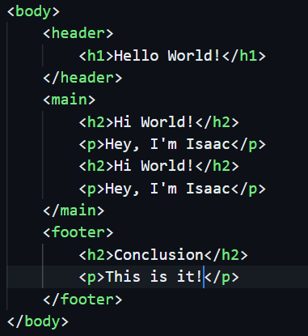

Definition=
Semantic Tags are used to give your code extra meaning for other assistive tecnologies and other tecnologies like a search engine to understand your code's meaning and help them navigate through your page. The Semantic Tags also will organize them and divide them into sections.
<div> Tags=
Now that we talked about Semantic Tags=, I'll talk about <div> tags. Older generation coders wonder why we use semantics instead of just <div>. The biggest reason behind this is because <div> tags do not provide any meaning to us, they are often used for grouping and styling purposes, providing structure to a web page's layout.
Uses=
Semantic tags in HTML are designed to provide meaning and structure to the content of a web page. They help browsers, search engines, and assistive technologies understand the purpose and significance of different sections of a webpage. Using semantic tags makes your HTML code more readable, accessible, and SEO-friendly.
Here are a list of Semantic Tags in HTML=
-
<header> -
<main> -
<footer> -
<figure> -
<section> -
<article> -
<aside> -
<abbr>
And finally, here's an example of me showing you guys how I add Semantics to my HTML5 file.

In this example, I used the <header>, <main> and the <footer> tags.